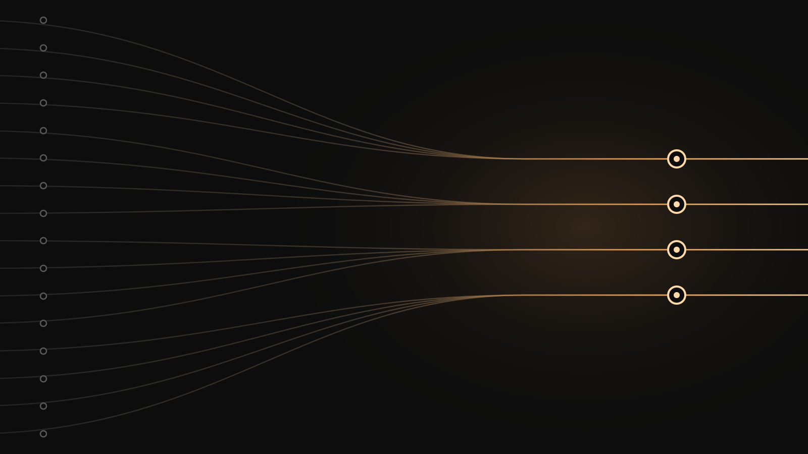

ByTheWay
ByTheWay was a carpooling startup I co-founded and where I served as co-CTO. It was my first experience of building a company rather than a project: deciding what to build, who it was for, and (the part nobody warns you about) what to stop doing.
I co-led the technical side: product architecture, the implementation roadmap, and the ordering of what got built when. That last one turned out to be the real job. Carpooling is a two-sided marketplace, so nothing works until both sides show up, and almost every engineering decision is really a decision about which side you are betting on first.
Beyond the platform itself, I drove priorities across growth experiments and the internal tooling we needed to run operations. Splitting attention between shipping features, testing whether anyone wanted them, and keeping the team unblocked is a different skill from writing good code, and I was not especially good at it at first.
It ran from 2024 to 2025 and is no longer active. The constraint is almost never the code. I now start projects by asking what would have to be true for this to matter.
- Role
- Co-founder & Co-CTO
- Status
- Closed
- Year
- 2024–2025
- Code
- bytheway

Next: OrgaAI